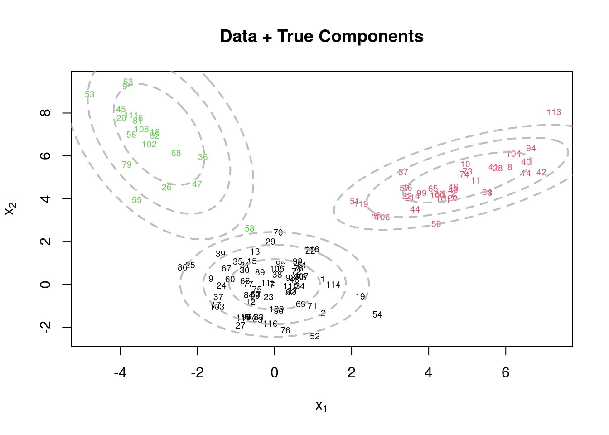
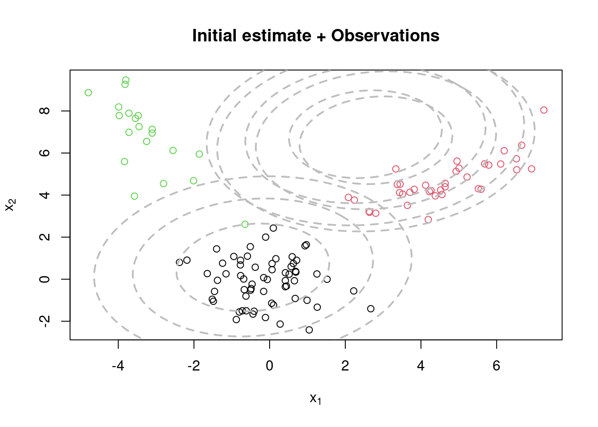
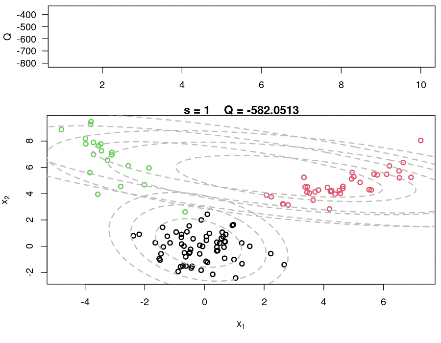
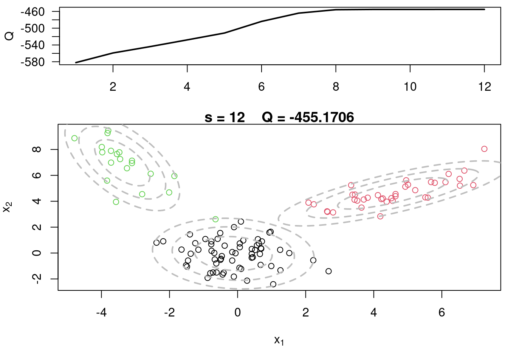

- 1
- Clear the environment
- 2
- Multivariate normals are not default in R
- 3
- Required for plotting
- 4
- For reproducibility
Sample code for multivariate normal EM :spiral_notepad: \(\mathcal{R}\)
This variant differs from the code sample above in that it uses the mvtnorm package to generate multivariate normal distributions. It also uses the ellipse package to plot the ellipses around the means of the components.
This is an example of an EM algorithm for fitting a mixtures of K p-variate Gaussian components. The algorithm is tested using simulated data
This code block generates the synthetic data for MVN data using three clusters
## Generate data from a mixture with 3 components
1KK = 3
2p = 2
3w.true = c(0.5,0.3,0.2)
4mu.true = array(0, dim=c(KK,p))
5mu.true[1,] = c(0,0)
mu.true[2,] = c(5,5)
mu.true[3,] = c(-3,7)
6Sigma.true = array(0, dim=c(KK,p,p))
7Sigma.true[1,,] = matrix(c(1,0,0,1),p,p)
Sigma.true[2,,] = matrix(c(2,0.9,0.9,1),p,p)
Sigma.true[3,,] = matrix(c(1,-0.9,-0.9,4),p,p)
8n = 120
9cc = sample(1:3, n, replace=T, prob=w.true)
10x = array(0, dim=c(n,p))
for(i in 1:n){
11 x[i,] = rmvnorm(1, mu.true[cc[i],], Sigma.true[cc[i],,])
}- 1
- Number of components of the mixture
- 2
- Number of dimensions of the data
- 3
- True weights associated with the components
- 4
- Initialize the true means list
- 5
- True means for each component
- 6
- Initialize the true variances list
- 7
- True variances for each component
- 8
- Number of synthetic samples to generate
- 9
- Simulate the latent variables for the component indicator function and generate the data
- 10
- Initialize the data matrix x for the sythesized data
- 11
- Sample from a MVN with mean & covariance selected by component indicator
Let us visualize the data and the true components before running the EM algorithm. The ellipses represent the contours of the true Gaussian components at different confidence levels (50%, 82%, and 95%).
par(mfrow=c(1,1))
plot(x[,1], x[,2], col=cc, type="n", xlab=expression(x[1]), ylab=expression(x[2]))
text(x[,1], x[,2], seq(1,n), col=cc, cex=0.6)
for(k in 1:KK){
lines(ellipse(x=Sigma.true[k,,], centre=mu.true[k,], level=0.50), col="grey", lty=2, lwd=2)
lines(ellipse(x=Sigma.true[k,,], centre=mu.true[k,], level=0.82), col="grey", lty=2, lwd=2)
lines(ellipse(x=Sigma.true[k,,], centre=mu.true[k,], level=0.95), col="grey", lty=2, lwd=2)
}
title(main="Data + True Components")
The EM algorithm now fits a mixture of multivariate Gaussian components to the data.
The E-step computes the responsibilities (or weights) for each data point and component, while the M-step updates the parameters (weights, means, and covariances) of the Gaussian components based on these responsibilities. The algorithm iterates until convergence, which is determined by the change in the Q function being below a specified threshold.
plot_components <- function(
QQ.out, s,
x, cc,
KK, Sigma, mu,
levels = c(0.50, 0.82, 0.95),
ellipse_col = "grey", ellipse_lty = 2, ellipse_lwd = 2,
q_ylim = NULL,
png_dir = NULL, png_prefix = "frame_", png_width = 900, png_height = 700, png_res = 120,
...
) {
if (!is.null(png_dir)) {
dir.create(png_dir, recursive = TRUE, showWarnings = FALSE)
png_file <- file.path(png_dir, sprintf("%s%03d.png", png_prefix, s))
grDevices::png(filename = png_file, width = png_width, height = png_height, res = png_res)
on.exit(grDevices::dev.off(), add = TRUE)
}
# Plot current components over data
1 layout(matrix(c(1,2),2,1), widths=c(1,1), heights=c(1.3,3))
2 par(mar=c(3.1,4.1,0.5,0.5))
3 plot(QQ.out[1:s],type="l", xlim=c(1,max(10,s)), las=1, ylab="Q")
4 par(mar=c(5,4,1,0.5))
plot(x[,1], x[,2], col=cc, main=paste("s =",s," Q =", round(QQ.out[s],4)),
5 xlab=expression(x[1]), ylab=expression(x[2]), lwd=2)
for(k in 1:KK){
6 lines(ellipse(x=Sigma[k,,], centre=mu[k,], level=0.50), col="grey", lty=2, lwd=2)
lines(ellipse(x=Sigma[k,,], centre=mu[k,], level=0.82), col="grey", lty=2, lwd=2)
lines(ellipse(x=Sigma[k,,], centre=mu[k,], level=0.95), col="grey", lty=2, lwd=2)
}
}- 1
- Set up the layout for the plots
- 2
- Set the margins for the first plot
- 3
- Plot the Q function over iterations
- 4
- Set the margins for the second plot
- 5
- Plot the data points with the current component estimates
- 6
- Draw ellipses for each component at different confidence levels
We can now begin to with the EM algorithm = first we need to initilize the parameters.
- 1
- We initially set equal weight to each component
- 2
- We set Random Cluster centers randomly spread over the support of the data
- 3
- We create the covariance matrices with size \(p \times p\) for each component.
- 4
- We then initialize them for each component to be the same and equal to the overall covariance of the data divided by the number of components.
- 5
- We initialize the iteration counter,
- 6
- convergence flag,
- 7
- log-likelihood value,
- 8
- vector to store the log-likelihood values over iterations.
- 9
- We set the convergence threshold for the change in log-likelihood between iterations.
Tip
- Using a covariance matrix that is the variance of the data scaled down by the number of components is a common initialization strategy that assumes each component starts with a similar spread as the data itself, but scaled down by the number of components to encourage them to capture different parts of the data distribution.
- The algorithm will stop when the relative change in log-likelihood is less than this value, indicating that further iterations are unlikely to significantly improve the fit of the model to the data.
par(mfrow=c(1,1))
plot(x[,1], x[,2], col=cc, xlab=expression(x[1]), ylab=expression(x[2]))
for(k in 1:KK){
lines(ellipse(x=Sigma[k,,], centre=mu[k,], level=0.50), col="grey", lty=2, lwd=2)
lines(ellipse(x=Sigma[k,,], centre=mu[k,], level=0.82), col="grey", lty=2, lwd=2)
lines(ellipse(x=Sigma[k,,], centre=mu[k,], level=0.95), col="grey", lty=2, lwd=2)
}
title(main="Initial estimate + Observations")
while(!sw){
## E step
v = array(0, dim=c(n,KK))
for(k in 1:KK){
v[,k] = log(w[k]) + dmvnorm(x, mu[k,], Sigma[k,,],log=TRUE) #Compute the log of the weights
}
for(i in 1:n){
v[i,] = exp(v[i,] - max(v[i,]))/sum(exp(v[i,] - max(v[i,]))) #Go from logs to actual weights in a numerically stable manner
}
## M step
w = apply(v,2,mean)
mu = array(0, dim=c(KK, p))
for(k in 1:KK){
for(i in 1:n){
mu[k,] = mu[k,] + v[i,k]*x[i,]
}
mu[k,] = mu[k,]/sum(v[,k])
}
Sigma = array(0, dim=c(KK, p, p))
for(k in 1:KK){
for(i in 1:n){
Sigma[k,,] = Sigma[k,,] + v[i,k]*(x[i,] - mu[k,])%*%t(x[i,] - mu[k,])
}
Sigma[k,,] = Sigma[k,,]/sum(v[,k])
}
## Check convergence
QQn = 0
for(i in 1:n){
for(k in 1:KK){
QQn = QQn + v[i,k]*(log(w[k]) + dmvnorm(x[i,],mu[k,],Sigma[k,,],log=TRUE))
}
}
if(abs(QQn-QQ)/abs(QQn)<epsilon){
sw=TRUE
}
QQ = QQn
QQ.out = c(QQ.out, QQ)
s = s + 1
#print(paste(s, QQn))
plot_components(QQ.out, s, x, cc, KK, Sigma, mu, c(-200, -100), png_dir = "em_mvn_frames")
}library(magick)Linking to ImageMagick 6.9.11.60
Enabled features: fontconfig, freetype, fftw, heic, lcms, pango, webp, x11
Disabled features: cairo, ghostscript, raw, rsvgUsing 16 threadsmake_em_gif <- function(
frames_dir = ".",
pattern = "frame_*.png",
out_file = "em.gif",
duration_sec = 60
) {
stopifnot(requireNamespace("magick", quietly = TRUE))
files <- sort(Sys.glob(file.path(frames_dir, pattern)))
if (length(files) == 0) stop("No frames found. Check frames_dir/pattern.")
target_fps <- length(files) / duration_sec
allowed <- c(1, 2, 4, 5, 10, 20, 25, 50, 100)
fps <- allowed[which.min(abs(allowed - target_fps))]
img <- magick::image_read(files)
img <- magick::image_animate(img, fps = fps)
magick::image_write(img, path = out_file)
message(sprintf("Wrote %s (%d frames at %d fps ≈ %.1f sec)",
out_file, length(files), fps, length(files)/fps))
invisible(out_file)
}
make_em_gif("em_mvn_frames", out_file = "em.gif", duration_sec = 60)Wrote em.gif (12 frames at 1 fps ≈ 12.0 sec)
# Plot current components over data
layout(matrix(c(1,2),2,1), widths=c(1,1), heights=c(1.3,3))
par(mar=c(3.1,4.1,0.5,0.5))
plot(QQ.out[1:s],type="l", xlim=c(1,max(10,s)), las=1, ylab="Q", lwd=2)
par(mar=c(5,4,1,0.5))
plot(x[,1], x[,2], col=cc, main=paste("s =",s," Q =", round(QQ.out[s],4)), xlab=expression(x[1]), ylab=expression(x[2]))
for(k in 1:KK){
lines(ellipse(x=Sigma[k,,], centre=mu[k,], level=0.50), col="grey", lty=2, lwd=2)
lines(ellipse(x=Sigma[k,,], centre=mu[k,], level=0.82), col="grey", lty=2, lwd=2)
lines(ellipse(x=Sigma[k,,], centre=mu[k,], level=0.95), col="grey", lty=2, lwd=2)
}